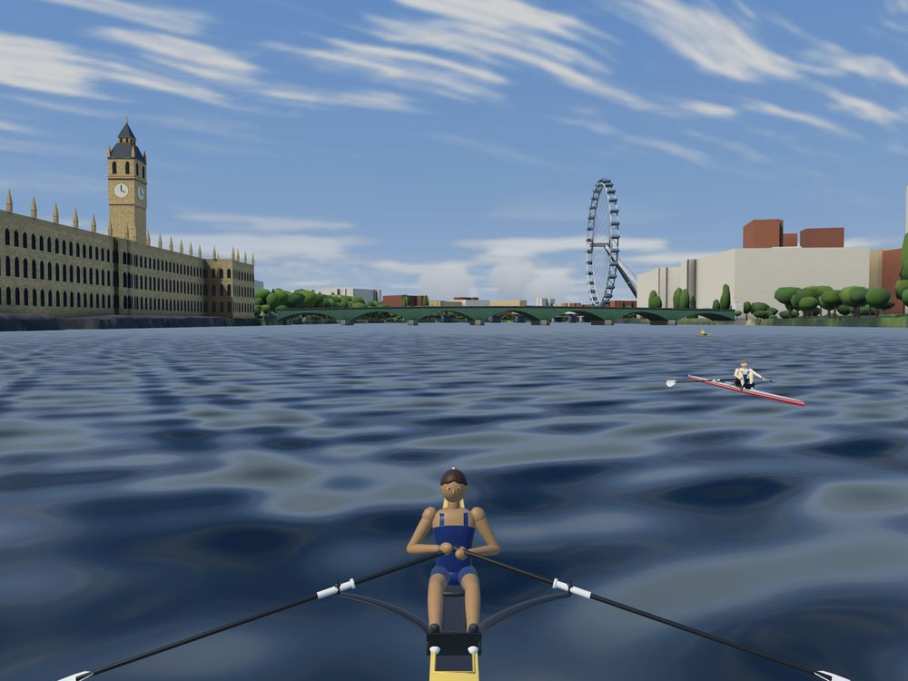
Made for the Concept2 RowErg · iPhone and iPad
Your lane.
On the world's waters.
Turn your Concept2 RowErg into a boat on real water. Row the Thames past Big Ben, through a flooded Amazon forest or beneath the cliffs of the Lysefjord, while a coach reads every stroke from your PM5 and talks you through the workout.
Concept2 PM5FreeNo adsNo accountNo trackingOpen source
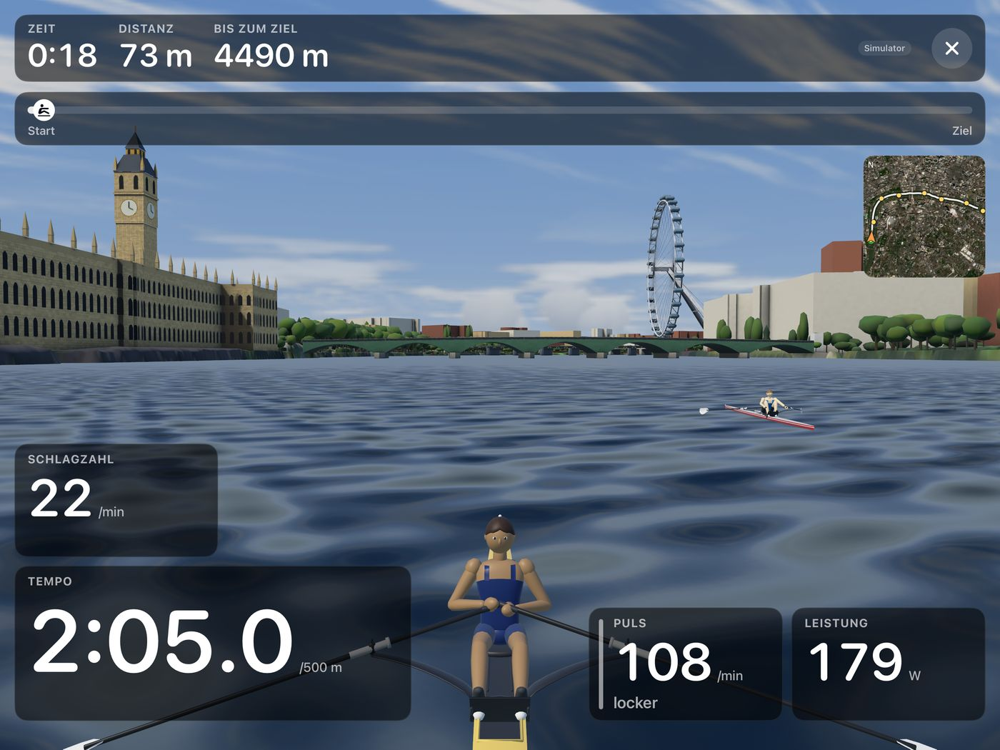
17courses on real waters
10countries on two continents
116guided workouts
17training plans of 3–24 weeks
0accounts needed
Concept2
Built around your PM5.
RowCoach talks to the PM5 monitor directly over Bluetooth, using Concept2's own protocol. That gives it more than speed and distance: every stroke phase moves your rower in the boat, and the coach reacts within a stroke.
- Every number from the monitor: time, distance, pace per 500 m, stroke rate, watts, calories and heart rate.
- Stroke by stroke: drive and recovery from the PM5 drive the 3D rower, so the boat moves the way you row.
- Connect in seconds: press Connect on the PM5, tap it in the app. No pairing in iOS settings.
- Heart-rate straps from Polar, Garmin and others, directly or through the PM5.
- Other Bluetooth rowers with the open FTMS standard (e.g. WaterRower with ComModule, First Degree, Merach) work in beta.
Courses
Real banks. Real bridges. Real water.
Every course is built from official elevation models, aerial imagery and building data. The bridges are where they are, and the kilometres add up. All 17 courses are in the app, ready to row offline.
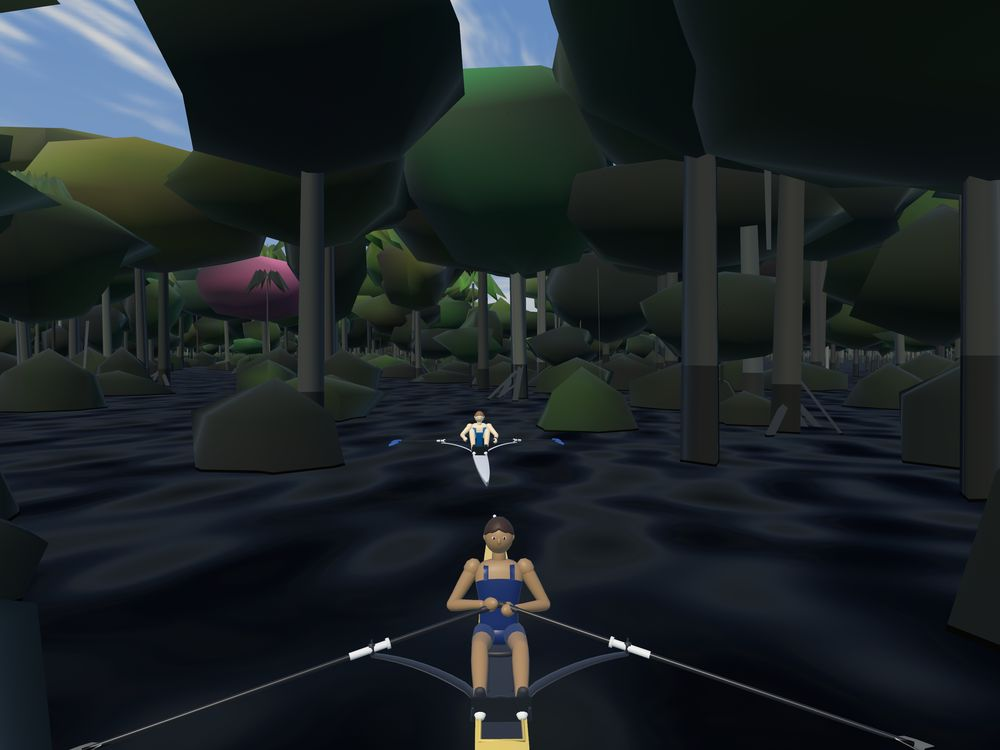
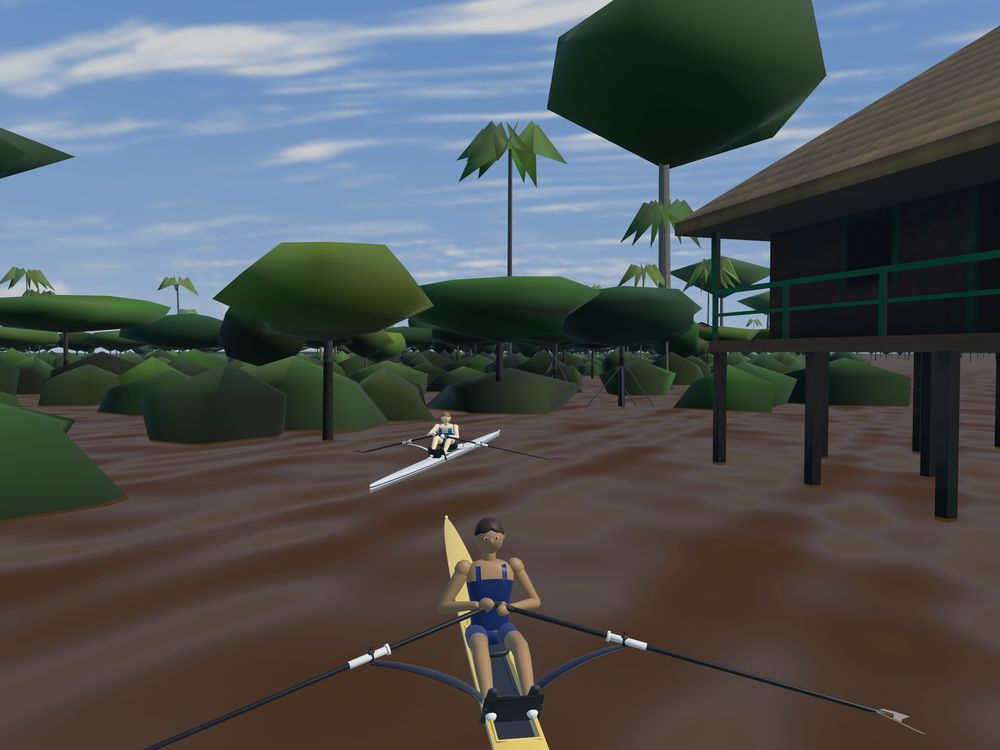
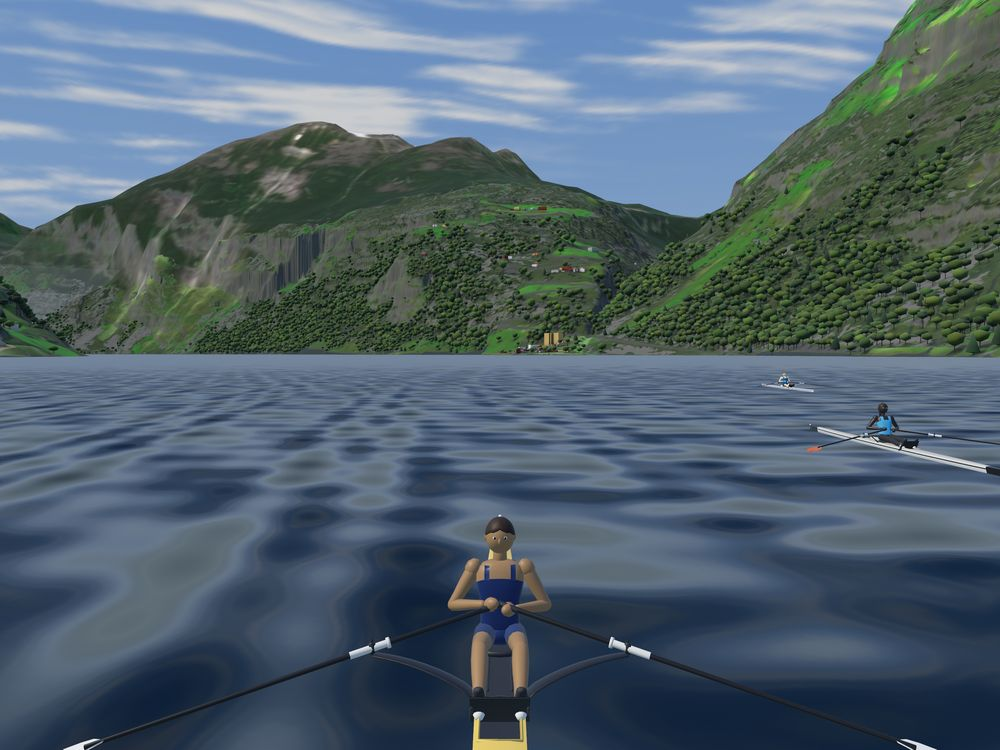
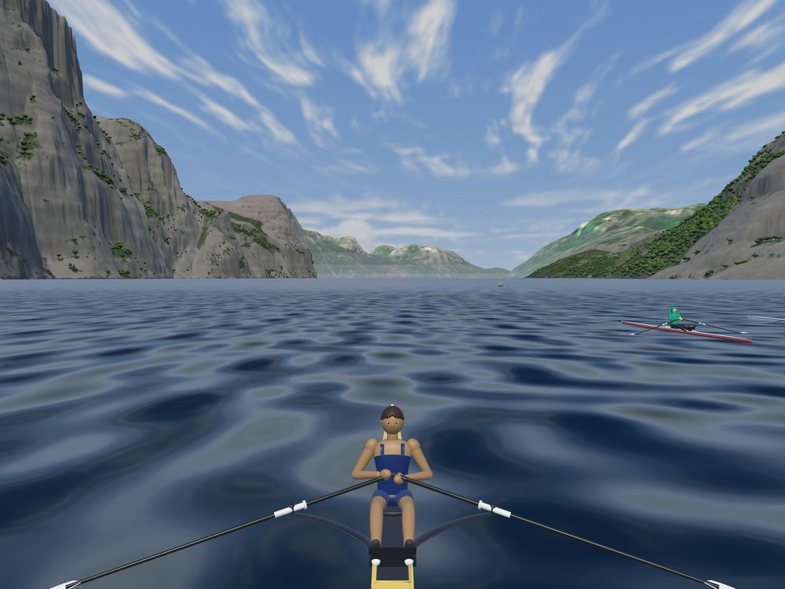
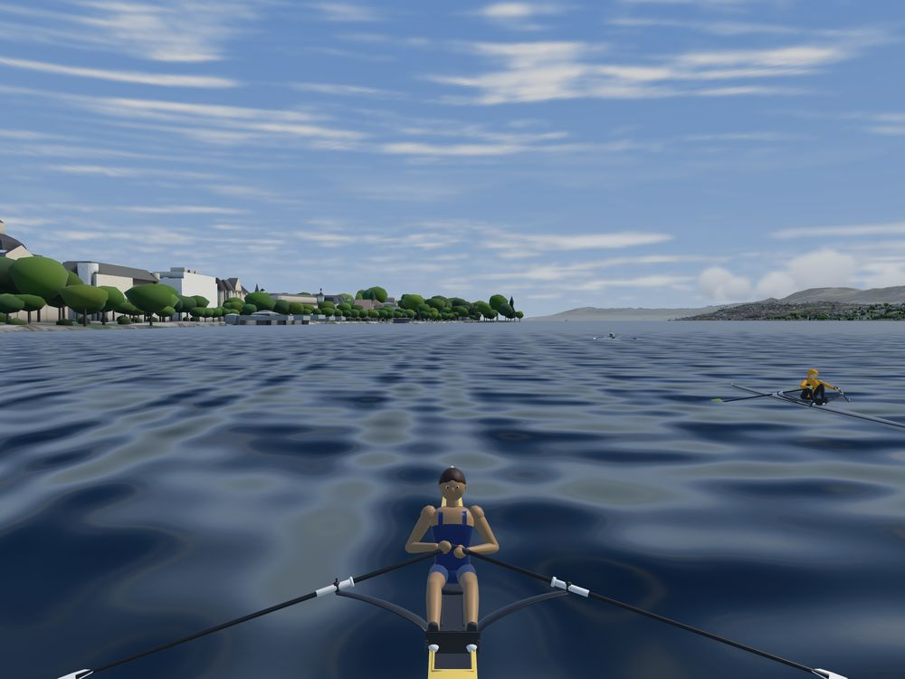
Also included: the Rhine in Basel, the Spree in Berlin, Lake Lucerne, the Alster in Hamburg, Henley, Lac d'Annecy, the Canal Grande in Venice, the Amstel in Amsterdam, the Alte Donau in Vienna, Oslo harbour and a second Amazon course in the Anavilhanas.
Features
Everything in the box.
Version 1.0 is free, with no in-app purchases and no time limit.
17 courses in 3D
From the Thames to the Amazon, built from official open geodata.
Spoken coach
Reacts to pace, stroke rate and heart rate. English and German.
Pace line
A line on the water shows your target pace.
Life on the water
Other rowers, tour boats and barges on their own lanes.
Threshold test
Ramp, 3-minute or gentle step test, then five training zones.
Workouts and plans
116 workouts and 17 plans, with a suggestion for today.
Your rower, your boat
Twelve figures, boat designs and your flag on shirt and hull.
Concept2 first
Concept2 PM5 with stroke-by-stroke data, heart-rate straps, Apple Health. FTMS rowers in beta.
Coach
It keeps counting when you stop.
The coach reads every stroke from your monitor. It tells you when the hard part is coming, notices when your stroke rate sags and pulls you through the last 250 metres. It only speaks when there is something to say, and it works offline.
0:00
Start. Settle into rhythm.
0:20
A bit quick for the start. Pace yourself.1:52 instead of 1:58 /500 m
3:41
Halfway. A bit behind target.
5:30
Rate has dropped clearly. Bring it back now.26 → 21 strokes/min
6:58
Two hundred fifty meters left.
7:44
Strong ending.last 250 m 4 s faster than average
Training
A plan that knows where you are.
A threshold test measures your power, including a gentle version without going all out. RowCoach turns it into five zones, and every workout runs on your numbers.
Easybelow 55 %
Endurance55–75 %
Tempo75–88 %
Threshold88–102 %
Maxabove 102 %
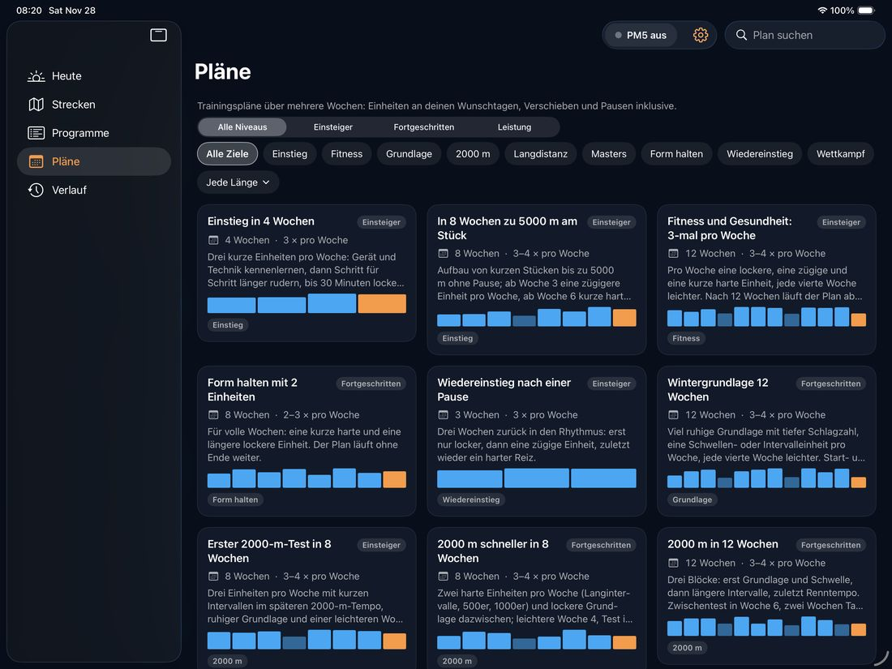
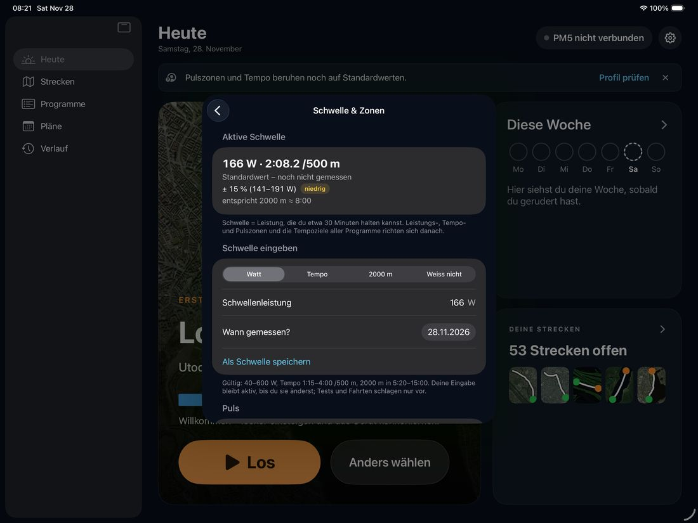
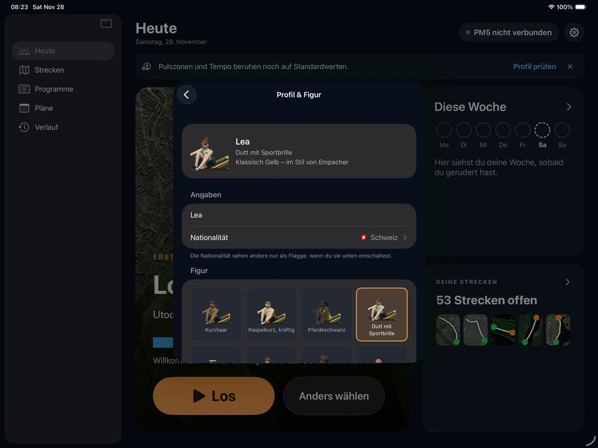
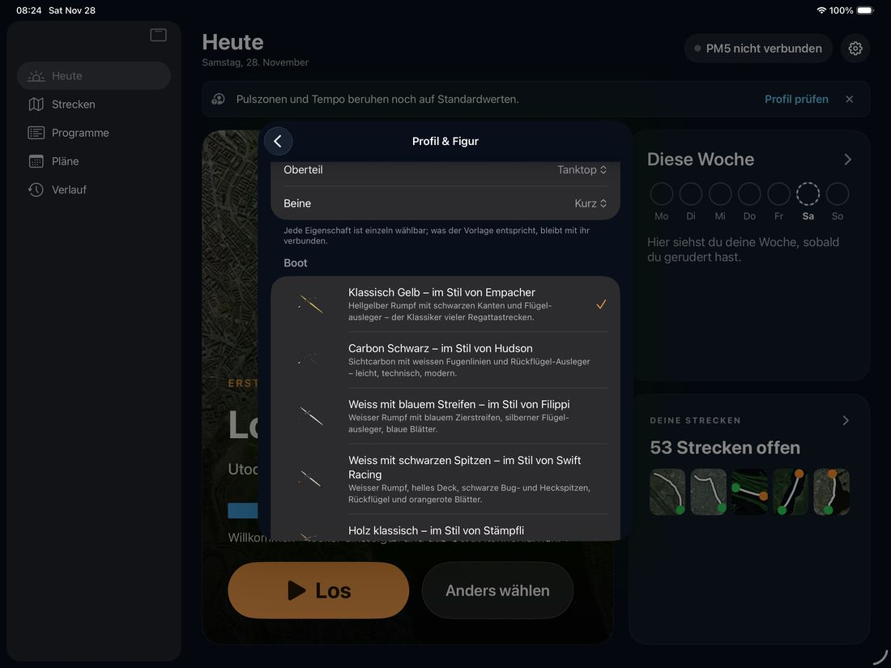
No account. No network.Everything stays on your device.
- RowCoach installs and runs without signing in, even in a basement without Wi-Fi.
- No ads, no tracking, no data collected. Your rows stay on your device and, if you allow it, in Apple Health.
- No rowing machine at hand? Try the built-in demo.
- Open source under Apache 2.0: github.com/falkue/RowCoach
Privacy
RowCoach collects no data.
No account, no analytics, no advertising, no tracking, and no connection to any server. Nothing you do in the app is sent to us or to anyone else.
On your device
Rows, heart rate, profile, plans and settings stay inside the app on your iPhone or iPad. Deleting the app deletes them.
Apple Health
Only if you allow it: each row is saved as an indoor rowing workout, and RowCoach reads past workouts, heart rate and body weight (read only) on the device.
Bluetooth
Used only to connect your rowing machine and heart-rate strap. No location, no map downloads.
Read the full privacy policy · Questions: support@rowcoach.uk
Coming later
What's next.
More courses
Paris, Boston, Rio, Tokyo and many more, plus a high-detail version for newer devices.
Online races
Race other rowers at the same start time, with tournaments and rankings.
Sync
Your rows and settings on all your devices, optional and free.
Auf Deutsch
RowCoach ist eine kostenlose Open-Source-App für iPhone und iPad zum Rudern am Concept2 RowErg (PM5), andere Bluetooth-FTMS-Rudergeräte als Beta: 17 echte Gewässer in 3D, ein Sprachcoach auf Deutsch und Englisch, 116 Trainings, 17 Pläne, Schwellentest und Pulszonen, Apple Health. Kein Konto, keine Werbung, kein Tracking, alles bleibt auf deinem Gerät. Datenschutzerklärung